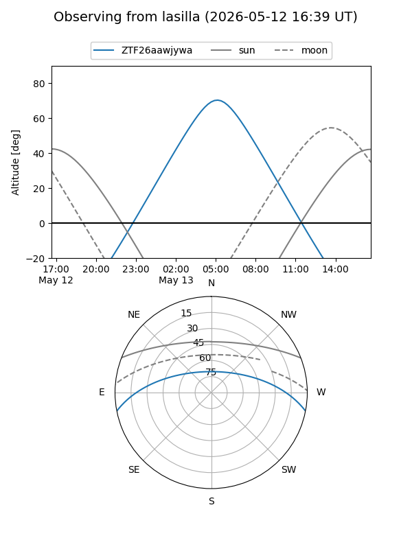
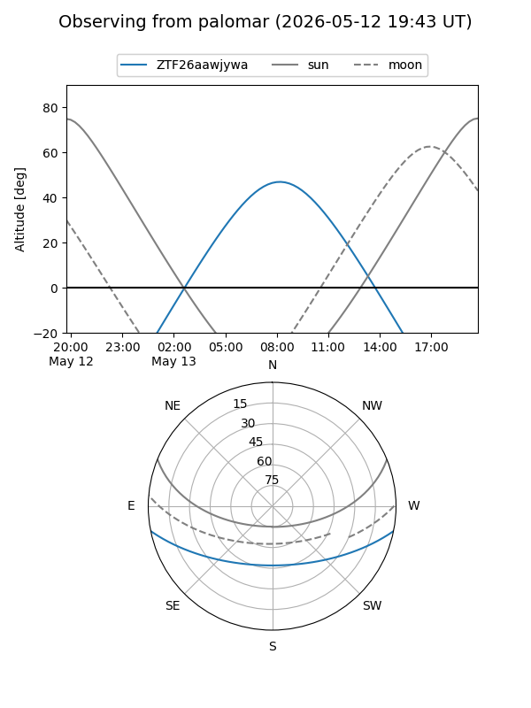

ZTF26aawjywa
Target ZTF26aawjywa at 2026-05-13 08:50
Aliases and brokers:
FINK: link
Lasair: link
ALeRCE: link
alt names
ZTF26aawjywa (ztf,fink_ztf)
Coordinates:
equatorial (ra, dec) = 236.5931,-9.57480
equatorial (HMS+DMS) = 15:46:22.34,-09:34:29.27
galactic (l, b) = (358.1804,+33.93601)
Flags:
Photometry:
last ztfg=20.06
1 ztfg detections
Lightcurve
Visibility


Additional plots